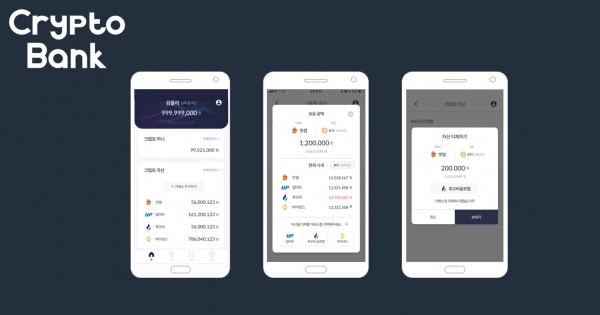

|
가상자산도 토스처럼 한번에 관리... '크립토뱅크' 등장 2020. 03. 13 |
|---|
|
 크립토뱅크 서비스 화면 - 빗썸, 업비트 등에 분산돼 있는 가상자산 하나의 앱으로 관리- 6월 베타버전 테스트 후 7월 안드로이드 버전 출시 가상자산(암호화폐) 업계의 간편 송금 서비스 ‘토스’를 목표로 서비스 출시를 앞둔 곳이 있어 눈길을 끈다. 핀테크 스타트업 두빛나래소프트가 개발 중인 '크립토뱅크'가 그 주인공. 크립토뱅크는 여러 거래소에 흩어져 있는 가상자산을 한 화면에서 관리하고 송금할 수 있도록 개발 중인 모바일 애플리케이션(앱)이다. 거래소의 보유 자산과 시세 조회를 앱 안에서 할 수 있으며 거래소 간 자산 이체도 한 화면에서 할 수 있도록 개발하고 있다. 가상자산 투자자는 여러 거래소에 가입된 경우가 많아 자산 역시 나눠져 보관된 경우가 많다. 거래소에 보관해 놓은 자산을 이체할 때 긴 지갑 주소를 복사해서 붙여 넣는 등 번거로운 과정을 거쳐야 하는데 크립토뱅크는 하나의 앱 안에서 이를 가능하게 해 불편함을 해소하겠다는 계획이다. 상대방에게 가상자산을 보내는 경우에도 친구 등록을 하면 원하는 거래소를 선택해 바로 보낼 수 있도록 시스템을 만들고 있다. 크립토뱅크는 우선 빗썸, 업비트, 후오비글로벌, 바이낸스 등 4개 거래소에 있는 자산을 관리, 송금할 수 있도록 개발 중이다. 가상자산은 비트코인(BTC), 이더리움(ETH), 리플(XRP), 테더(USDT) 등을 지원할 예정이다. 주목할만 한 점은 사용 편의성을 높이기 위해 가상자산 송금 시 원화를 기입하도록 한다는 점이다. 기존에 거래소에서 다른 곳으로 가상자산을 보낼 때에는 해당 가상자산의 수량을 입력해야 한다. 소액의 비트코인을 보내는 경우에는 소수점 아래까지 일일이 입력해야 하는 번거로움이 있다. 이에 크립토뱅크는 송금시 원화를 입력하면 원화에 상응하는 가상자산이 시세에 맞춰 자동으로 계산돼 보내지도록 한다는 계획이다. 비트코인 10만원 송금하기와 같은 방식이라는 설명이다. 크립토뱅크는 가상자산 관리, 송금에 더해 결제까지 활성화시키는 길도 열어놓을 예정이다. 여기에는 회사가 특허를 받은 양방향 QR 전송 시스템을 활용한다는 방침이다. 일반 가맹점 계산대에서 볼 수 있는 인쇄된 형태의 QR코드는 위에 다른 QR코드를 덧대 전혀 다른 곳으로 돈을 보내게 하는 위험성이 있다. 양방향 QR 전송 시스템은 결제를 진행하는 두 기기가 통신해 QR코드를 2번 인식하게 하고 정보가 맞아야 결제가 가능한 구조를 취하고 있다. 이같은 방식으로 보안성을 높이는 한편, QR코드가 생성된 가맹점 포스기를 통해 결제하기 때문에 현금이나 신용카드를 사용하는 것처럼 가상자산을 손쉽게 결제할 수 있다고 회사 측은 강조했다. 두빛나래소프트는 택시 결제 시스템 전문기업 티페이먼트와 협력해 경기도, 인천 지역 개인택시 1500여 대에 가상자산 결제가 가능한 단말기를 공급했다. 포스 시스템 도소매 업체 대원포스 등과도 협력해 가맹점에서 사용하는 일반 포스기에 가상자산 결제 시스템이 깔릴 수 있도록 추진 중이다. 국내에서 실제 결제 사례를 만들고 이를 바탕으로 인도네시아 등 지역으로 서비스 영역을 차츰 확장해 나간다는 계획이다. 크립토뱅크는 오는 6월 베타버전 테스트를 마친 뒤 7월에는 가상자산 관리, 송금, 결제 기능 등을 모두 갖춘 안드로이드 버전을 먼저 출시할 예정이다. |
| 출처 : 디지털투데이 (DigitalToday)(http://www.digitaltoday.co.kr) |
| 기사 보러가기 → |
| 목록 |
Society for worldwide Exchange Payment and Transfer